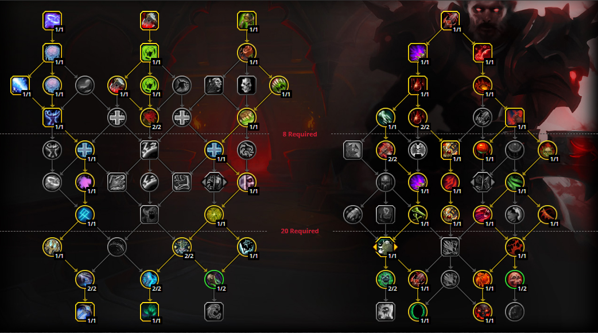
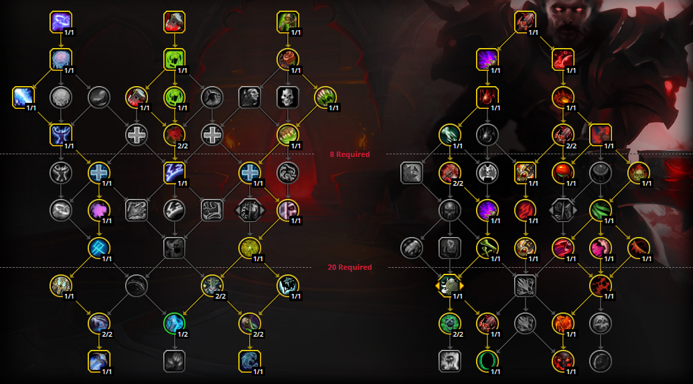

General talent tree for all content!
(not optimized for separate encounters)

With this talent tree, you usually have 1-2 points in your class talent tree, which you can swap around into another nodes. One, which is the third from the top in the left-most section (Coldthirst), this is usually redundant in cases where there's nothing to interrupt. The other being Unholy Bond at the bottom right, which adds very little to your overall throughput and can be instead used for group-wide defensive (Anti-magic Zone)
Talent tree focused on Single Target throughput

In this talent tree you're sacrificing a little bit of defensivness and transforming that into more single target damage. In case you wish to focus more on AoE, you can drop a talent point in the general tree from Soul Reaper and Unholy bond and instead put it into Rune Mastery and Abomination Limb, which gives us a lot more AoE burst, along with an option of Mass Grip, which is harder to obtain in our spec tree.